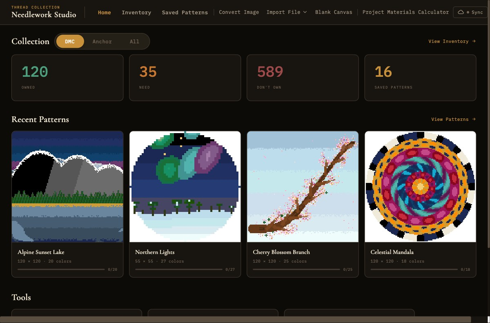

Getting Started
An introduction to Needlework Studio and a walkthrough of your first session.

The Needlework Studio dashboard with stats cards and recent patterns
What is Needlework Studio?
Needlework Studio is a free, open-source desktop application for managing and designing counted cross-stitch patterns. It includes a pattern editor, thread inventory for DMC and Anchor brands, project tracking, and import/export in PDF, OXS, and JSON formats. Download it for macOS, Windows, or Linux and start using it immediately - no server, no account setup, no internet connection required.
For users who want multi-device access, Needlework Studio can also be self-hosted as a web application via Docker or manual Python setup. The desktop app can optionally sync with a server to keep your data available across devices.
Getting Needlework Studio
Desktop App (Recommended)
The desktop app is the easiest way to get started. Download the installer for your platform - macOS (.dmg), Windows (.exe), or Linux (.AppImage) - and you are ready to go. Everything runs locally on your machine with no server or internet connection required. A default account is created automatically on first launch so you can start designing immediately.
If you later want to access your data from multiple devices, the desktop app supports bidirectional sync with a self-hosted server instance.
Self-Hosted Server (Optional)
If you want to access Needlework Studio from any device on your network, share it with household members, or sync data between a desktop app and a web interface, you can deploy a server instance. The recommended method is Docker - a single docker-compose.yml file is all you need. You can also set up the Flask backend manually with Python 3.10 or later for full control over the environment.
For detailed installation instructions for all methods, see the Installation page.
First Launch
Desktop App
Open the app and you are in. A local default account is created automatically on first launch, so there is no login screen or setup step. You will land directly on the dashboard and can start importing patterns or building your thread inventory right away.
Server Deployment
On a server deployment (Docker or manual), you need to create a user account before you can log in. Run manage_users.py create from the terminal - it will prompt you for a username, email, and password (see Administration for details). After creating your account, run manage_users.py admin to promote yourself to an administrator. Once your account is ready, open the server URL in your browser and sign in.
Admin users can also manage other accounts from the browser using the built-in web admin panel, accessible from the navigation bar. See Administration for more information.
Exploring the Dashboard
After logging in, you arrive at the Home page. The dashboard gives you an at-a-glance summary of your workspace:
- Stats cards - Four cards summarizing your thread collection: Owned (threads you own), Need (threads you need for your patterns), Don't Own (threads not in your collection), and Patterns (total saved patterns). A brand toggle lets you filter the collection stats by DMC, Anchor, or All. As you build your inventory and save patterns, these numbers update automatically.
- Recent patterns - A row of thumbnail cards showing your most recently saved or edited patterns. Click any card to open it in the Pattern Viewer.
- Tools - A set of quick-access cards for common actions: Convert Image, Import Pattern (PDF, JSON, or OXS), Blank Canvas, and Materials Calculator.
If this is a brand-new installation, the dashboard will show zeroes and an empty recent patterns section. That is expected - once you import your first pattern or start building your thread inventory, the dashboard will populate.
Navigation Overview
The main navigation bar runs along the top of the screen (or is accessible via the hamburger menu on smaller screens). Here is what each section contains:
Home
Returns you to the dashboard with stats cards and recent patterns.
Inventory
Opens the Thread Inventory, where you can browse all 744 DMC and 400+ Anchor threads, search by number or name, filter by ownership status, and track your skein quantities.
Saved Patterns
Displays your full pattern library as a gallery of thumbnail cards. You can search, sort by name or date, filter by status (Not Started, In Progress, Completed), and perform batch actions like deletion. Click any pattern to open it in the Pattern Viewer.
Create Section
The navigation bar's Create section provides several ways to start a new pattern:
- Convert Image - Upload a photograph or image file and convert it into a cross-stitch chart. You can configure the grid size (25 to 250 stitches), color count (5 to 70 colors), dithering, contrast, brightness, and crop the image before generating.
- Import File - A dropdown menu with three import options:
- PDF Pattern - Upload a cross-stitch PDF chart. Needlework Studio will parse the chart pages and extract the pattern data automatically.
- JSON Pattern - Import a pattern in Needlework Studio's native JSON format, useful for sharing patterns between instances.
- OXS Pattern - Import an Open Cross Stitch (.oxs) XML file for interoperability with other cross-stitch software.
- Blank Canvas - Start with an empty grid at custom dimensions. Useful when you want to design a pattern entirely from scratch.
For a deeper look at the pattern creation tools, see Pattern Design. For details on file import workflows, see Import & Export.
Plan Section
The Plan section groups tools for project planning:
- Materials Calculator - Calculate fabric and thread requirements for your patterns. See Project Management for details.
On the desktop app, this section also includes a Sync button for managing Desktop Sync.
Settings & Theme Toggle
On the right side of the navigation bar you will find a gear icon for Settings and a theme toggle button. The Settings page lets you configure your preferences, including theme, gridlines, symbols, legend sort order, brush size, and calculator defaults.
Needlework Studio supports both a dark theme and a light theme. You can switch between them at any time by clicking the theme toggle button. Your preference is saved in your browser's local storage and will persist across sessions.
The dark theme uses warm, low-contrast tones. The light theme is brighter and can be easier for judging thread colors.
Next Steps
Now that you are familiar with the interface, here are some suggested next steps:
- Thread Inventory - Start cataloguing the threads you own so Needlework Studio can help you plan materials for future projects.
- Pattern Design - Try converting an image into a cross-stitch pattern or open a blank canvas to experiment with the drawing tools.
- Import & Export - If you have existing patterns in PDF, OXS, or JSON format, import them into your library.